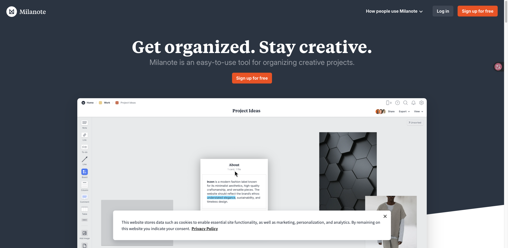

把灵感、参考图和笔记摊在一块板上，像设计师的实体软木板。
复刻一面「品牌项目灵感墙」
以哑光材质为主，避免高饱和与金属反光；版式留大量负空间，让产品自己占据视线。字体用无衬线，字重只取 Regular 与 Medium 两档。
· 找 3 张室内摄影参考
· 定 logo 的两版构图
· 周五和客户过第一轮
Milanote 的视觉语言：不是画图，是摆东西。图片、便签、色板、文字卡各自是一张有厚度的小卡，带轻微旋转和投影；卡片之间用极细的浅灰曲线箭头串成一条「思考流」—— 顺序是读出来的，不是排出来的。

一块视觉项目板。往板上放的东西有类型：笔记、图片、链接、文件、待办、色板、线、分栏、评论、表格。它们可以自由摆放、分组、连成流程，也可以层层嵌套子板。核心用途是收集灵感、整理调研、把项目资料摊开给客户或团队看。
谁在用：设计师、创意团队，以及做品牌、内容和营销策划的人。